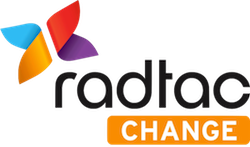
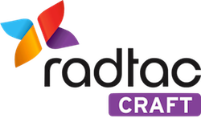
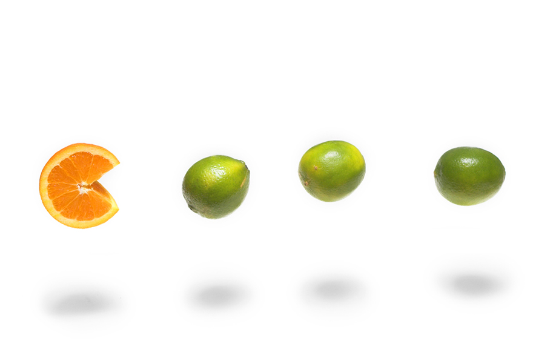
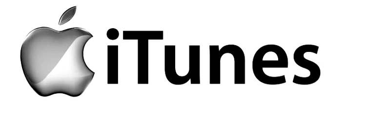
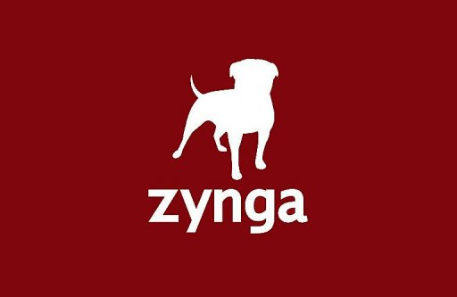
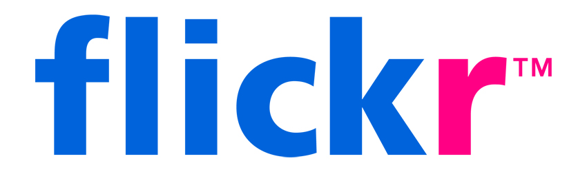
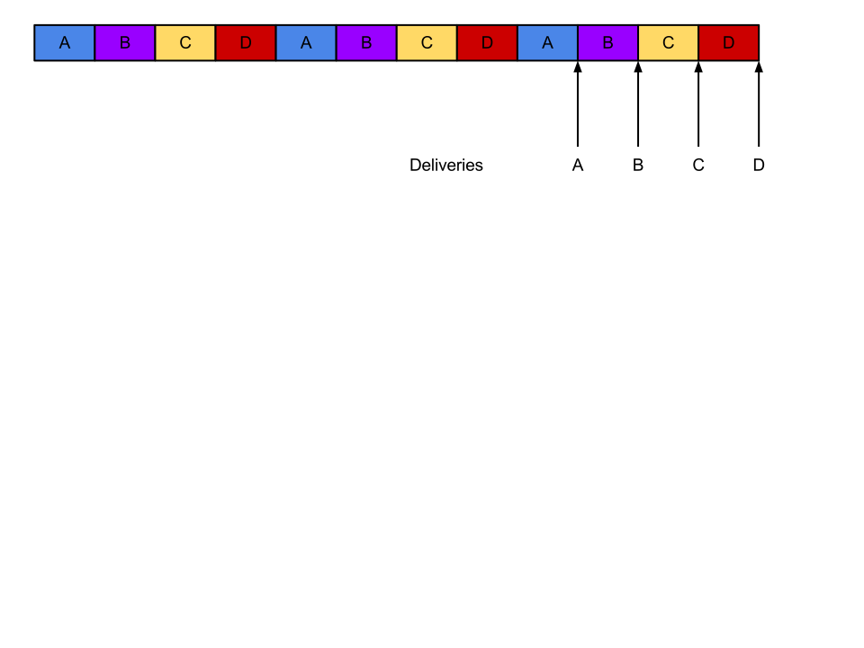
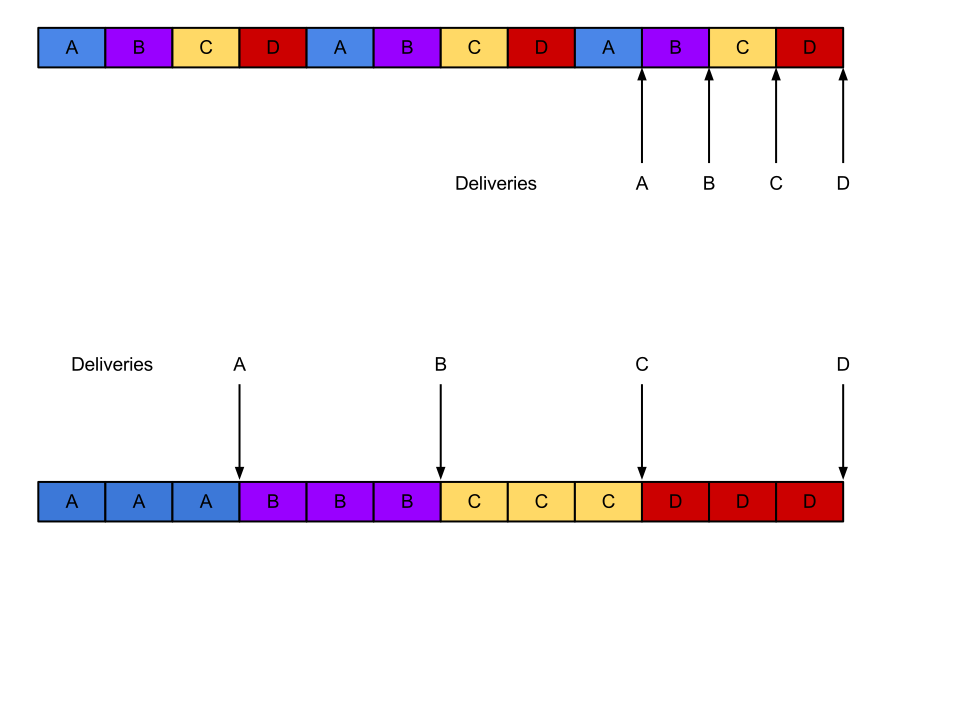
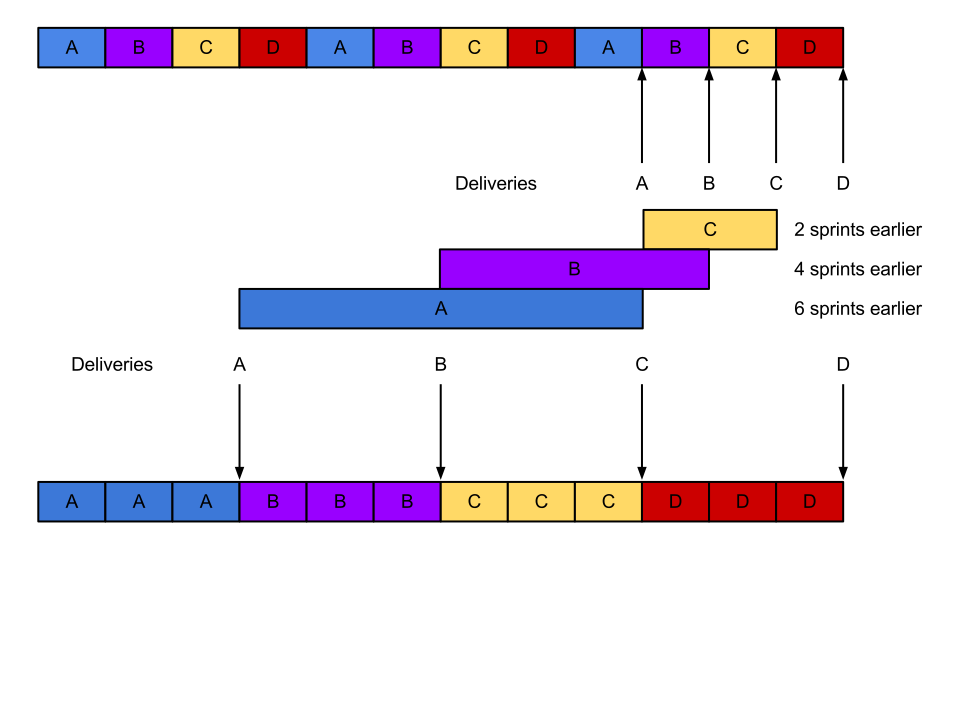

Release the Cheetah
Improving Software Quality
Nigel Runnels-Moss
- Head of radtac:craft
- Software Craftsman
- Agile Coach
- #CodeDojo
- @sleepyfox
radtac
Agile world leaders
- World's largest portfolio of Agile and management training
- Public training and customised, bespoke training
- Both on-site and off-site training
- Certified and uncertified training

- Business advantage through IT transformation
- Customised transformation unique to your company
- Transformation with shared risk and reward

- Agile by being, not doing
- Excellence comes as standard
- PAYG and shared risk/reward contracts
We believe:
- The highest priority is early and continuous delivery of valuable software
- Great results start with a great team
- The path to greatness is by diligent and continuous improvement
- The best customer relationships are co-located
- Agile is not the 'best' form of management
- ...but it is a great start
We believe:
- Software is eating the world
- Software is in crisis
- The cost of poor software is enormous
- We can do better
Software is eating the world
Fly by wire businesses
Airbus A340 cockpit
World's largest bookseller
Is a software company
World's largest video service
Is a software company
World's largest music company
Is a software company
World's fastest growing games company
Is a software company
World's largest photography company
Is a software company
World's fastest growing telecoms company
Is a software company
World's fastest growing recruitment company
Is a software company
Software is eating the world
These companies dominate by being better at software
Software 'crisis'
At a NATO conference in Germany, high ranking government and military officials discuss why:
- Projects run over-budget
- Projects run over-schedule
- Software is very inefficient
- Software is of low quality
- Software often doesn’t meet requirements
- Code is difficult to maintain
- Software is sometimes never delivered!
When was this?
- Yesterday?
- Last week?
- Last year?
What has changed?
What has changed?
- Most software still of poor quality
- Despite 44 years the technical debt is estimated by NIST at $60bn/year
- Equal to 2 quarters of negative growth
- Off-shoring is not the panacea that was promised: only 7% differential in true costs
- Hidden/intangible costs more than outweigh this
Case Study
- Major online travel player
- Outsourced website to Hungary
- £75m per day turnover
- More than 5 years with same provider
- >120 Java developers
- approx. 500 KLOC
Issues
- Quarterly releases
- 3-6 month Time-To-Market
- Unresponsive offshore partner
- >3,500 bugs
- 30min+ builds
- almost zero test coverage
- Definitely not cheetah country!
Solution
- Onshore team co-located with business
- Agile transformation using Scrum
- Started with one team of 4 craftsmen
- Grown to 25 organically over 6 months
- Rearchitect into seperately deployable units
- Remediation using XP tech practices:
- TDD, Refactoring, CI, Pair-programming
Positive outcomes
- Releases every 2 weeks
- Build time reduced to 5 mins
- <1200 bugs, none severe or critical
- Three independantly deployable modules
- 25 onshore outperfoming 120 offshore
COPQ
- Cost of poor quality =
- Rework (cost to fix to pass tests)
- + Tech debt (cost to fix bugs)
- + lost opportunity cost (schedule slip)
- + lost revenue (brand equity)
- Example project size: 100KLOC
- Implementation budget: £3m
Rework costs
- Industry av. rework cost £1.75/LOC[1]
- Java is £3.36/LOC
- 100KLOC
- Rework cost is £340k
Technical debt cost
Lost opportunity cost
Total COPQ
- (excluding brand equity damage)
- Rework £340k
- + Technical debt £150k
- + Opportunity cost £810k
- = total cost £1.3m
- 43% of original project budget
Free takeaways
- Simple budget savers
- Minimum Viable Product (MVP)
- Language choice
- Kanban
Minimum Viable Product
- Standish Group's CHAOS report[5]
- 45% of software features are never used
- 19% of features are rarely used
- So 64% of features are poor value for money
- Do the other 36% first (v1.0)
- Faster TTM, lower cost
- Agile, Kanban and Lean Startup
Language Choice
- CAST Report on App. Software Health[1]
- Average cost to remediate: £1.75/LOC
- Java cost to remediate: £3.36/LOC
- Almost twice as expensive
- JavaEE's complexity encourages alternatives
- Whether Node.js, Scala or Ruby, an alternative can save £160k over a 100KLOC project
Matrix management
Work In Progress (WIP)
Cost savings
Total savings using Kanban
- Opportunity cost per sprint £10k
- Project C 2 sprints earlier = £20k
- Project B 4 sprints earlier = £40k
- Project A 6 sprints earlier = £60k
- Total cost saving = £120k
Contracts, radtac-style
- Flexible contracts to suit your needs
- Agile contracts: Pay As You Go e.g. break clause per sprint or release
- Risk & Reward, performance-based contracts e.g. 1/3 of contract value is dependent on our successful delivery
Release your cheetah!
- Employ the radtac advantage:
- The most suitable Modern Methods for your project
- Highly experienced, technically excellent Software Craftsmen
- PAYG and Risk & Reward Contracts align us with your business
Talk to us
- Learn: Peter Measey
- Change: Darren Wilmshurst
- Craft: Nigel Runnels-Moss
- People: Jose Casal
- Sales: Richard Lindsay
- Contracts: Michael Short
References
[1] 'Report on Application Software Health', CAST (link)
[2] '3 harmful metrics and 2 helpful metrics', Capers Jones for CERM (link)
[3] 'Why Your IT Project May Be Riskier Than You Think', Harvard Business Review (link)
[4] 'Diseconomies of Scale', Jeff Atwood, referencing COCOMO figures (link)
[5] 'Build only the features you need', Jim Johnson at XP2002, author of the Standish Group report (link)